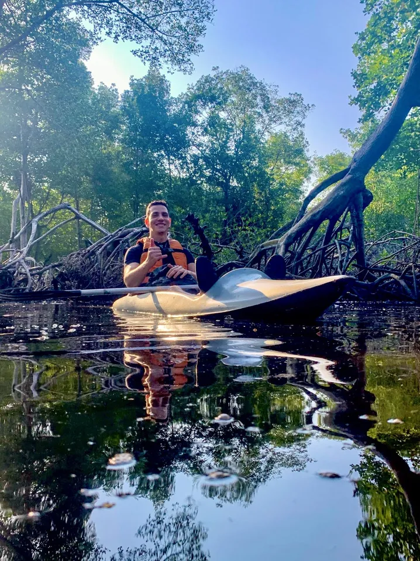
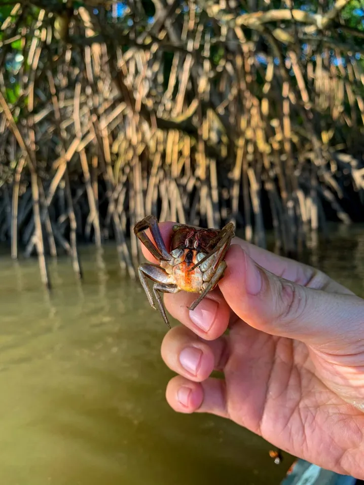

Passeios de caiaque no manguezal de Vitória.
Para turistas e moradores. Turismo consciente e criativo, com guia local, desde 2008.


Um dos maiores manguezais urbanos do Brasil fica dentro da capital.
A Remada Roortiz leva turistas e moradores para conhecer o manguezal de Vitória por dentro, remando. Os passeios acontecem desde 2008, com guia que conhece o local.
- Raízes aéreas e canais estreitos dentro do mangue
- Aves, caranguejos e a vida do ecossistema
- Explicações do guia sobre o que você está vendo
Pôr do sol na baía, com a serra ao fundo.
Nos passeios do fim da tarde, o mangue muda de cor. Os horários dependem da maré e do clima.
Como Funciona
Peça o passeio
Escolha a data e envie o pedido pelo site ou pelo WhatsApp.
Receba a confirmação
Confirmamos se a data funciona com a maré, o clima e a lotação.
Reme no mangue
Vá ao ponto de saída, receba as orientações e entre no mangue.
- Saída
- [ponto de encontro]
- Duração
- [a confirmar]
- Valor
- [a confirmar]
- Grupo
- [a confirmar]
- Inclui
- Caiaque, remo e colete salva-vidas
Pronto para remar?
Envie o pedido e confirmamos a data pelo WhatsApp, conforme maré e clima.
Perguntas Frequentes
As dúvidas mais comuns de quem vai remar pela primeira vez.
O passeio pode ser em qualquer dia?
Não. Os passeios no mangue dependem da maré e do clima, por isso são combinados com antecedência e confirmados pelo WhatsApp.
Pedir o passeio é o mesmo que reservar?
Não. O pedido informa a data desejada. A vaga só está garantida depois da confirmação pelo WhatsApp.
Preciso saber remar?
[confirmar com o Lauro]
O que levar e como me vestir?
[confirmar com o Lauro]
Crianças podem participar?
[confirmar com o Lauro]